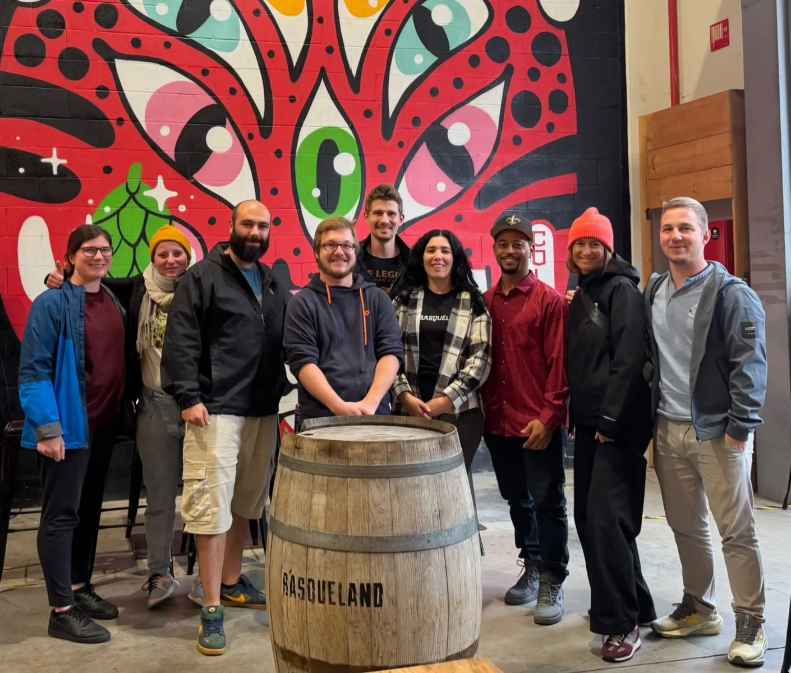

Aktuelles · Unterwegs im Baskenland
Von Aarau bis ins Baskenland: zu Besuch bei Basqueland
Ein Blick hinter die Kulissen, kreative Biere und ein ganz besonderer Imperial Stout – unser Besuch bei Basqueland.
Basqueland BrewingSan Sebastián · Spanien17 Monate Barrel Aged